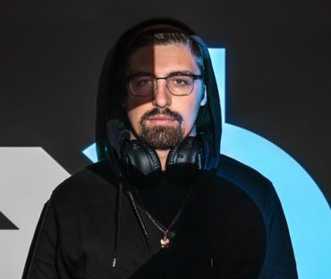
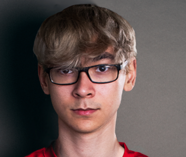
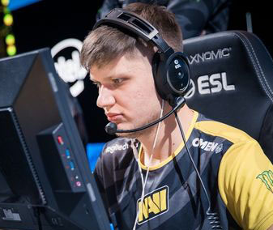

Most popular and top performing FPS players
Michael "Shroud" Grzesiek is a retired professional Counter-Strike: Global Offensive. Michael was the second long lasting player in Cloud9. He was the best player of his time. And he's still well-known for his fast and accurate flicks. According to shroud himself he retired because he was tired of the constant stress that the competetive events gave him. Currently, he is a full-time streamer partnered with Twitch and Logitech. And in 2019 he earned the "Content creator of the year award". He is one of the most popular players who actively streams, regularly pulling in more than 40,000 viewers. His original alias was "eclipse," but later when the name was taken he changed to "shroud" as it was the first synonym of "eclipse" he could find. This is why his former name on Twitch was mEclipse. He was chosen to be in the "All Star" MLG Columbus match for the American side.
Tyson "TenZ" Ngo is a retired professional from Counter-Strike: Global Offensive. Is now a professional in Valorant (also known as Project A). He was the first person to reach the highest rank in the game known as "Radiant". He recently got signed by the team Sentinels and won the VCT Masters Reykjavík 2021.
Oleksandr "S1mple" Kostyliev is a Ukrainian professional Counter-Strike: Global Offensive player who currently plays for Natus Vincere as an AWPer. He is widely considered as one of the best CS:GO players in the world. Sometimes referred to as "Sasha" (or Саша in Russian Cyrillic) - a common nickname given to a person named Alex or Alexander in Russian-speaking countries. Got immortalized on the old version of Cache with a graffiti after he pulled off a 1v2 AWP falling no-scope clutch round against Fnatic at ESL One: Cologne 2016. He got the graffiti tattooed on his left shoulder.
MVPs
- DreamHack Winter 2017
- StarSeries Season 4 2018
- StarSeries Season 5, 2018
- ESL One Cologne 2018
- Dreamhack Masters Marseille 2018
- CS:GO Asia Championships 2018
- BLAST Pro Series Copenhagen 2018
- StarSeries Season 7, 2019
- IEM Katowice 2020
- BLAST Premier: Global Final 2020
- DreamHack Masters Spring 2021